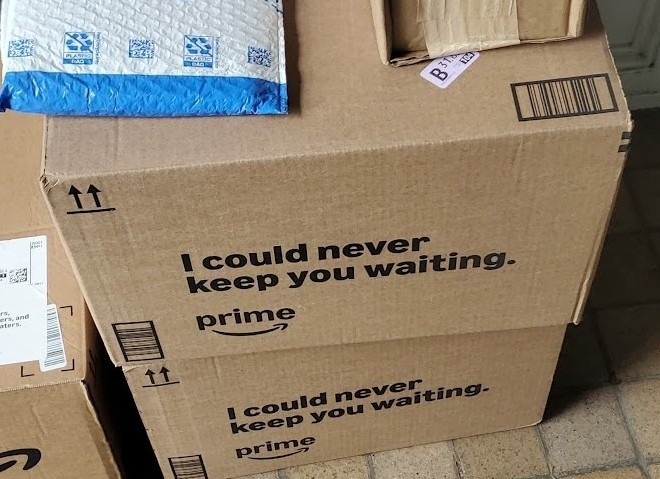

Jobs, Small business · November 20, 2026
Destroying small businesses: a perfectly predictable unintended consequence

Dear Mayor Mamdani,
When Amazon warned its New York customers this week that the Delivery Protection Act could add up to $5 to every order, you had a one-word answer: "greed." It's a good line. It is also a lie.
The bill, Intro 518, sponsored by Council Member Tiffany Cabán, is sold as a fight against a trillion-dollar corporation, but it is not. Three groups will lose from it: the small business owners, many of them minority and immigrant New Yorkers, who deliver the packages; the workers who will lose their jobs; and the New Yorkers who will pay for it.
How do we know this will happen? We already ran this experiment, and we have the city's own data to prove it.
The bill kills the local businesses that work for Amazon
Amazon does not deliver most of its packages in New York with its own employees. It contracts with local delivery companies, more than 40 of them, employing more than 5,000 people. Intro 518 would require Amazon to employ every driver directly. Those companies would lose their only customer. They built their lives around serving the largest and most successful corporation of the 21st century, and thought this client would never default.
These are not faceless corporations. By Amazon's count, a quarter of them are owned by Black or Hispanic New Yorkers and one in ten by veterans. Their owners have names: Jordan Rodriguez in the Bronx, Roman Dekhterman on Staten Island, Juan Martinez in Red Hook, and Rudy Cazares, who said it better than anyone: "Amazon is going to be fine. People like us are the ones who are going to pay the price." One of them, DashWave, started in 2023 with 15 employees and now has more than 100. The bill simply kills their businesses and leaves them out in the cold, with loans on their vehicles and other bills to pay. This is a deliberate attack on New York's middle class and on entrepreneurs who built their livelihoods outside the corporate world, without fancy Ivy League diplomas.
The bill will kill delivery jobs
In December 2023 the city set a minimum pay rate for restaurant delivery workers (the Department of Consumer and Worker Protection's minimum pay rule for app-based delivery workers). It was marketed to New Yorkers the same way: as protecting workers from greedy apps. Here is what the city's own October 2026 report shows, comparing mid-2023 with this spring:
- The number of workers on the restaurant delivery apps fell from 106,931 to 69,806, a drop of 35%.
- The number of workers who actually made deliveries fell from 75,865 to 67,500, a drop of 11%.
- For grocery apps, covered since January under Local Laws 123 and 124 of 2025, workers making deliveries fell 14% in a single year.
Those who kept their spots earn much more. Good for them. But fewer people are able to make a living, and those who work have no flexibility. The apps now make workers book shifts in advance and let in only as many as they need. Your own Department of Consumer and Worker Protection admits that working across several apps, or logging in for a few deliveries when you need the money, has become "functionally impossible." So the door closed for young people working toward a degree who need part-time work, and for parents and caregivers who need flexible schedules.
If one in nine delivery jobs disappears, as it did for restaurant delivery, that is more than 550 people out of work, on top of every one of the 40-plus companies that employed them.
The workers who kept their jobs lost too. Total restaurant delivery tips dropped 24%. The average grocery tip fell from $6.86 to $4.22. Customers paying a fee to the app give less to the worker at the door.
Who pays for the party? New Yorkers!
The "regulatory response fee" is the part nobody mentions. It is New Yorkers, not some mythical omnipotent corporate gods, who are paying for the higher hourly rate. And they kept ordering: restaurant deliveries rose from 2.63 million a week to 3.39 million. They just paid more.
- Instacart added a $5.99 "regulatory response fee" to every New York order days after the grocery rules (Local Laws 123 and 124 of 2025) took effect.
- DoorDash charges its own "regulatory response fee" here, and raised its New York fees again this spring, citing the new minimum pay.
- The average customer fee on a grocery delivery rose from $7.85 to $12.76 in a year, up 63%.
The apps didn't eat the cost. They passed it on, kept their customers and kept their margins. Amazon will do exactly the same.
Amazon now says the bill could add up to $5 to every New York order. Whatever fee Amazon settles on, it will add to the cost of diapers, groceries and medicine for busy families.
So much for the affordability agenda!
My take
These unintended consequences are perfectly predictable ones. The city already ran the experiment, published the results and called it a victory.
More money for fewer workers, higher prices for every customer, and no difference to the companies vilified by the sponsors of this legislation. Now the Council wants to ruin more jobs and businesses, and have New Yorkers pay for it.
Calling it "greed" doesn't change the facts. Stop increasing the cost of our lives while pretending to care about affordability.
What I'm asking you to do
- Withdraw your support for Intro 518, and say you will not sign it in its current form.
- Before the Council passes any new delivery mandate, have the city publish what it will cost customers, and how many people will lose their jobs and businesses.
- If the concern is street safety, enforce the rules we have. Amazon drivers and small-business drivers drive on the same streets and obey the same rules.
- Most importantly, stop repeating the slogans and look at what you are actually promoting.
Sincerely,
Anya Levitov
What you can do
- Own or work for a local delivery company? Tell us what this bill would mean for you.
- Check your next Instacart or DoorDash receipt for the "regulatory response fee," and send it with this letter to your Council member. Ask them not to support Intro 518.
- Endorse the Dear Mamdani agenda.
Sources
- NY Daily News: Amazon threatens NYC orders could be $5 more if Council bill passes
- Fox Business: Amazon warns NYC shoppers of potential $5 per-order increase
- Amazon: Testimony on the Delivery Protection Act (April 2026)
- amNY: Mamdani takes aim at Amazon subcontracting model
- amNY: A father-son delivery business on what's at stake (op-ed by DashWave's founder)
- QNS: Rally for the Delivery Protection Act
- NYC DCWP: Delivery worker minimum pay rate update (October 2026)
- NYC DCWP: Minimum pay report press release (October 21, 2026)
- NYC DCWP: Grocery delivery protections take effect (January 26, 2026)
- Fox Business: Instacart's "regulatory response fee"
- DoorDash: Changes to fees for NYC consumers (April 2026)
- Black Enterprise: DoorDash's NYC regulatory response fee (2024)